A quantitative exploration of adjective ordering preferences with an incremental Rational Speech Act model
Hening Wang & Fabian Schlotterbeck

Presentation at ESSLLI 2023 Pros & Comps Workshop
Ljubljana, Slovenia, 2. Aug. 2023

Introduction
Adjective ordering preferences
-
- big white bear
- white big bear


- Robust across languages (e.g. Sproat, 1991)
Explanations from different perspectives
- Semantic hierarchies (e.g. Dixon, 1982)
- Syntactic mapping (e.g. Cinque, 1993)
- Psycholinguistic explanations (e.g. Martin, 1969; Whorf, 1945)
We focus on two recent hypotheses with experimental support and common, rationality-based theoretical motivation (Scontras, et al. 2017; Fukumura, 2019).
Hypotheses & questions
Subjectivity predicts ordering
Subjectivity hypothesis: Less subjective adjectives are preferred closer to the noun (Scontras et al., 2017).
-
Explanation: More efficient expressions are integrated earlier
in semantic composition to minimize misidentification of referents.
(see Scontras et al. 2019, 2020; Simonic, 2018; Franke et al. 2019) - Subjective adjectives include, e.g., gradable dimension adjectives like big.
Discriminatory strength affects ordering
Discriminatory strength hypothesis: More discriminatory adjectives are preferred earlier in the linear sequence. (Fukumura, 2019).
- Explanation: More efficient expressions are produced earlier in the linear sequence to maximize informativity.
- Adjectives have maximal discriminatory strength in a given context if they single out a referent perfectly.
Comparing the two hypotheses
- Both are based on efficient communication.
- Both assume early use of informative expressions.
- However, due to different perspectives (listener vs. speaker) early means different things (close to vs. far from noun in prenominal modification).
Different perspectives taken
Can the two perspectives be combined?
- discriminatory strength was not tested in the presence of subjectivity gradients.
- Subjectivity was not tested in a referential task.
-
Predictions of subjectivity regarding choice of referring expressions are indirect:
- Some instances of inefficient communication may suffice to drive conventionalization.
- Such instances my be restricted to certain readings of multi-adjective sequences, involving sequentially intersective context updates (cf. Franke et al. 2019).
- Nevertheless, subjectivity would be challenged by 'opposite adaptation' in an referential task
Main empirical question
What happens if the two hypotheses stand in direct conflict?
An example would be a context where a less subjective adjective discriminates more strongly between potential referents.
direct conflict between hypotheses

-
- big blue star
- blue big star
Experiment
Web-based Experiment: preference ratings
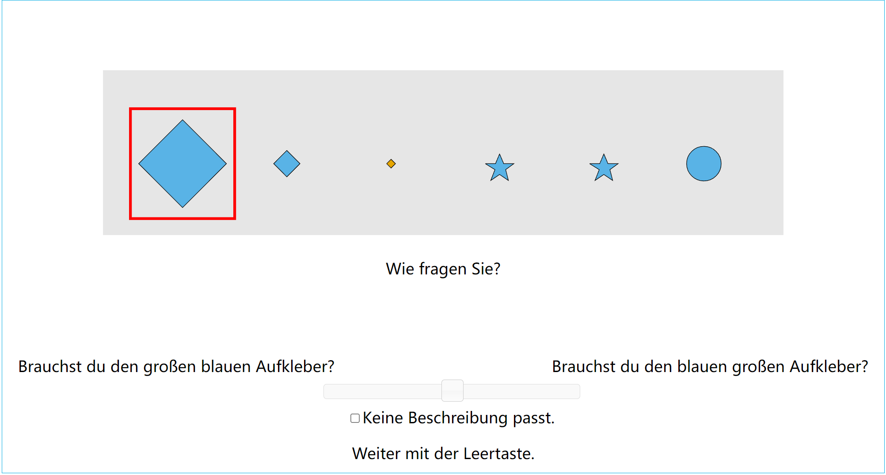Glosses
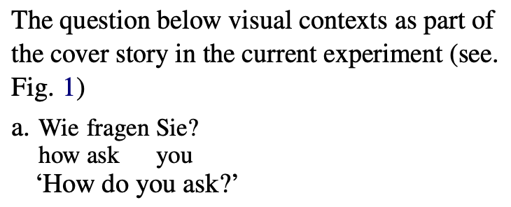More glosses
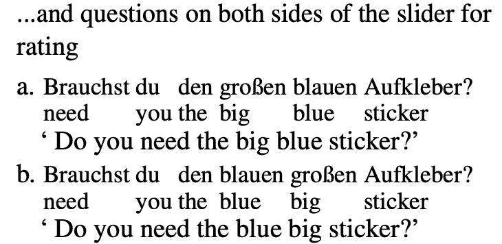Mixed design
-
Within factors:
- combination of adjectives from different semantic classes
(2 levels: dimension & color/shape versus color & shape) - relevance of the corresponding properties for reference resolution
(3 levels: first, second or both properties relevant)
- combination of adjectives from different semantic classes
-
Between factor
- Size distribution of objects
(2 levels: sharp vs. blurred; controlling 'contextual subjectivity' )
- Size distribution of objects
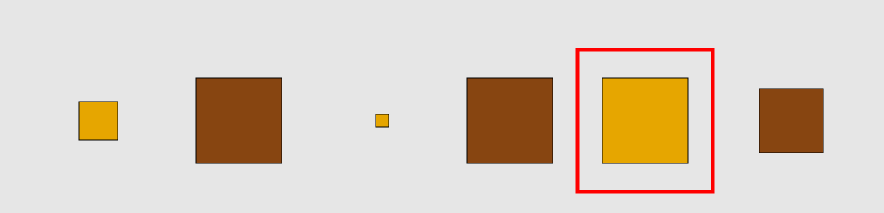
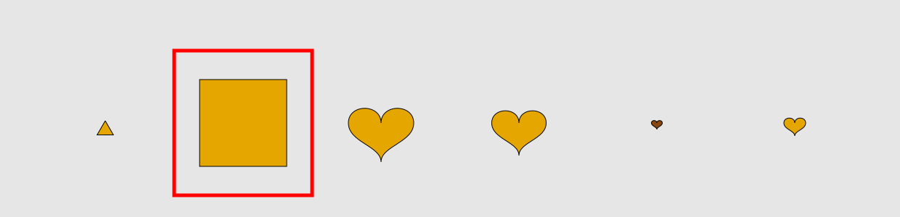
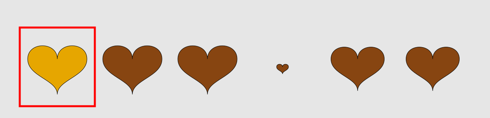
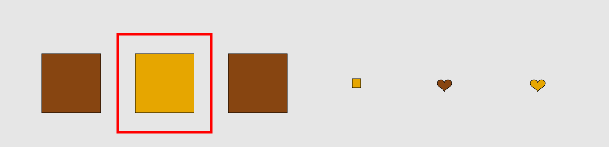
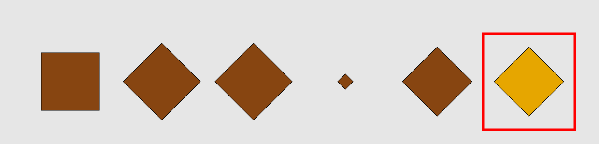
120 participants
recruited via prolific.co; 180 trials, 81 experimental items
Predictions
Preference for...
- subjective-first orders (subjectivity)
- orders with contextually more discriminatory adjectives first (discriminatory strength)
Reduced preference for...
- big-first orders in sharp distributions, where big is effectively non-subjective (derived from subjectivity but potentially in conflict with discriminatory strength)
Results
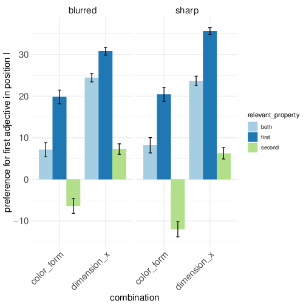- Preference for orders with contextually more discriminatory adjectives first (as expected)
Results
- Preference for subjective-first orders
(as expected ) -->
Results
- In big-relevant contexts with sharp distribution, preference for tall-first orders increased – contrary to prediction from subjectivity
Discussion
- Effects of subjectivity and discriminatory strength replicated
$\Rightarrow$ Both factors contribute to ordering preferences - Interaction indicates that preference for subjective-first ordering is
increased if these adjectives are contextually more informative.
$\Rightarrow$ Challenges explanation of subjectivity based on low communicative efficiency
Computational Model
Phenomena we want to model
in RSA framework (building on previous work)
- Redundancy (calls for 'continuous' semantics; Degen et al. 2020)
- Ordering preferences
(necessitate sequential restriction or incrementality) - Subjectivity
(suggests listener perspective) - Discriminatory strength
(suggests speaker perspective)
Previous modeling work
- Redundancy (e.g. Degen et al. 2020)
- Subjectivity (Simonic, 2018; Scontras et al., 2019; Franke et al., 2019)
-
Incremental interpretation in RSA
(Cohn-Gordon et al., 2019; Waldon & Degen, 2021; Yu, Waldon & Degen, 2023)
- From listener perspective, ordering preferences require context-dependent meanings (because of commutativity)
-
Lexical meanings:
\[\begin{aligned} [\![big]\!]^C &= \lambda x. size(x) > max(C) - \frac{k}{100} * (max(C) - min(C))\\ [\![blue]\!]^C &: \textrm{coinflip}\\ \end{aligned}\]
Perhaps here a brief introduction to the standard RSA?
Idea for incremental model
- Incremental listener interprets from $\underleftarrow{\textrm{right to left}}$ (i.e. restricts potential referents sequentially, in accordance with preferred interpretation).
- Incremental speaker maximizes informativity at each word from $\underrightarrow{\textrm{left to right}}$.
Fully incremental model
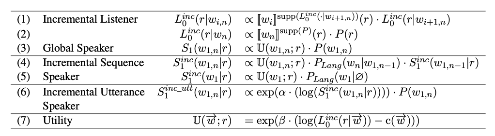In all definitions above:
- $r$ stands for a referent;
- $w_i$, $w_{i,n}$ and $\overrightarrow{w}$ stand for the i-th word in a sequence, a sequence of $n-i$ words and any sequence of one or more words, respectively;
- $supp(\cdot)$ denotes the support of a probability distribution;
- $P$ denotes prior probabilities over referents and utterances;
- $P_{Lang}$ assigns prior probabilities to potential next words;
- and, finally, $\alpha$ and $\beta$ are rationality parameters that govern the soft-max functions defined in rows (6) and (7), respectively.
In addition we used a bias in the prior $P(w_{1,n})$ of $S^{inc\_utt}_1$.
Prior model parameter distributions and model specifications
-
$color\_semvalue \sim Uniform(0,1)$
-
$k \sim Uniform(0,1)$
-
$wf \sim Uniform(0,1)$
-
$alpha \sim HalfNormal(5)$
-
$bias \sim HalfNormal(5)$
-
$steepness \sim Uniform(0,1)$
-
$sigma \sim Uniform(0,0.10)$
if sample distribution is $TruncatedNormal$($loc$ = predicted likelihood, $scale$ = $sigma$, $lower$ = $0$, $upper$ = $1$)
-
$v \sim Uniform(0,2)$
if sample distribution is $Beta$($loc$ = predicted likelihood, $concentration$ = $v$)
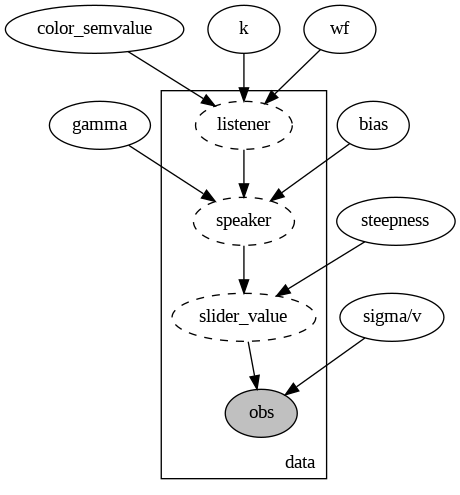
- $color\_semvalue \sim Uniform(0,1)$
- $k \sim Uniform(0,1)$
- $wf \sim Uniform(0,1)$
- $alpha \sim HalfNormal(5)$
- $bias \sim HalfNormal(5)$
- $steepness \sim Uniform(0,1)$
- $sigma \sim Uniform(0,0.10)$ if sample distribution is $TruncatedNormal$($loc$ = predicted likelihood, $scale$ = $sigma$, $lower$ = $0$, $upper$ = $1$)
- $v \sim Uniform(0,2)$ if sample distribution is $Beta$($loc$ = predicted likelihood, $concentration$ = $v$)
Model selection methods: Grid Search like
Search space:
-
Speaker: [incremental, global]
-
Sem. methods of size Adj.: [context dependent (sampling based), fixed (support based)]
-
Sample distribution: [TruncatedNormal, Beta]
-
Link function: [logit, logistic, linear, identity]
Scores:
-
Pearson Correlation Coefficient
-
L2 Error
-
Log Predictive Density (LPD)
- Search space:
- Speaker: [incremental, global]
- Sem. methods of size Adj.: [context dependent (sampling based), fixed (support based)]
- Sample distribution: [TruncatedNormal, Beta]
- Link function: [logit, logistic, linear, identity]
- Scores:
- Pearson Correlation Coefficient
- L2 Error
- Log Predictive Density (LPD)
Parameters for MCMC sampler: num_warmup = 5000, num_samples = 30000 (Aver. Runtime for a single model: about 1h using numpyro and A100)
Results
| Corr. Coeff. | L2 | LPD | |
|---|---|---|---|
| baseline: Global Speaker + f. Semantic | 0.289 | 0.140 | -6.991 |
| Global Speaker + c. Semantic | 0.290 | 0.140 | -6.991 |
| Inc. Speaker + c. Semantic | 0.299* | 0.140* | -6.989* |
| Inc. Speaker + f. Semantic | 0.299 | 0.140 | -6.989 |
Posterior analysis for the best model
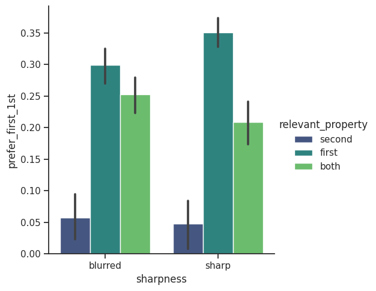
- Empirical data
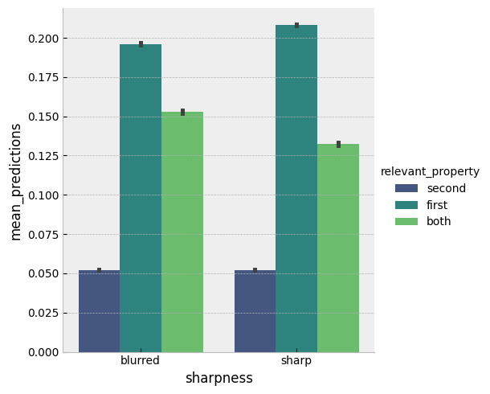
- Aggregated mean posterior predictions from the best model
- Empirical data
- Aggregated mean posterior predictions from the best model
Correlation plot of the best model
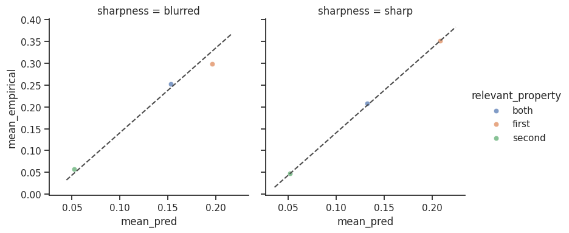
Comparing with the baseline model
- Best model with incremental speaker and context-dependent semantics
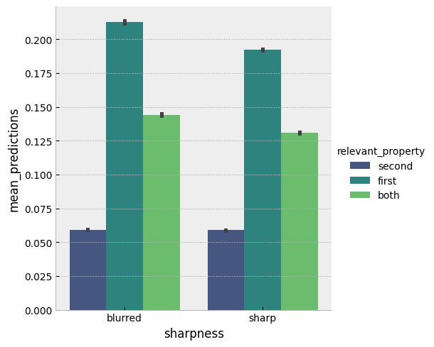
- Baseline model with global speaker and fix semantics
- Best model with incremental speaker and context-dependent semantics
- Baseline model with global speaker and fix semantics
Posterior model parameter distributions 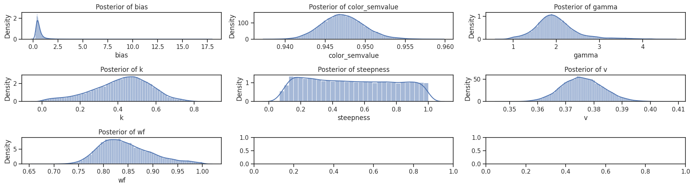
Maximum a posteriori (MAP) and 90% highest density interval (HDI) for each parameters:
color semantic value: MAP = 0.95, HDI = [0.94, 0.95]
alpha(gamma): MAP = 1.99, HDI = [1.16, 2.71]
k: MAP = 0.42, HDI = [0.16, 0.67]
steepness: MAP = 0.52, HDI = [0.12, 0.93]
wf: MAP = 0.84, HDI = [0.76, 0.93]
Histogram of empirical slider values 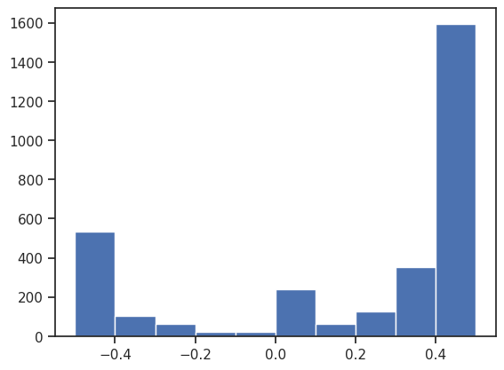 Link function needed?
Comparison of link functions and sample distributions
| Normal | Beta | |||||
|---|---|---|---|---|---|---|
| Corr. Coeff. | L2 | LPD | Corr. Coeff. | L2 | LPD | |
| logit | 0.299* | 0.132 | -15.540* | 0.298* | 0.140* | -6.989* |
| logistic | 0.298 | 0.132 | -15.544 | 0.005 | 0.186 | -7.080 |
| linear | 0.299* | 0.132 | -15.542 | 0.295 | 0.145 | -7.002 |
| identity | 0.298 | 0.132 | -15.542 | 0.298* | 0.140* | -6.989* |
Discussion
- Incremental speaker model based on context dependent size semantics with Beta as sample distribution and logit link function yields the best result
- Global speaker model generates predicitions opposite to empirical data, but in line with theory predicitons.
- Account for accurate estimation of aggregated mean and correlation
- Range of predictions from Beta distribution does not align.
- Random effects structure needed to account for variances
Aggregated Mean by conditions and participants
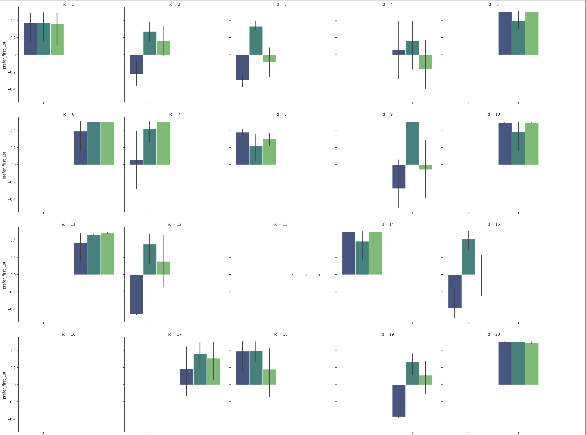General Discussion
- The observed contextual adaptation challenges an explanation of subjectivity that is based on low communicative efficiency alone.
- Both Qualitative and Quantitative effects are captured with biased incremental speaker
- With Grid Search like exploration, we found Beta as sample distribution and logit as link function account best for slider values
Another production experiment
- Preliminary GLMER analysis reveals:
- Similiar to slider values, sharpness increases the preference for subjective-first ordering in size-relevant context
- However, it also increases the preference for color-first ordering in color-relevant context Furthermore, it decreases the likelihood of overinformative usage of big in size-relevant context
- Are gradable dimension adjectives useful because they communicate extreme values?
$\Rightarrow$ Generative models needed!
Next steps
- We want to build a hierarchical model structure to incorporate random effects.
- We aim to generate random contexts, similar to those used in previous simulation-based accounts of subjectivity. Our goal is to further investigate how sequential context updates in our model affect the listener's perspective.
- We aim to model data from a free production task using the silimar model structure.
- We want to take steps towards a general model of interpretation based on truly incremental semantics (e.g. Bott & Sternefeld, 2017).